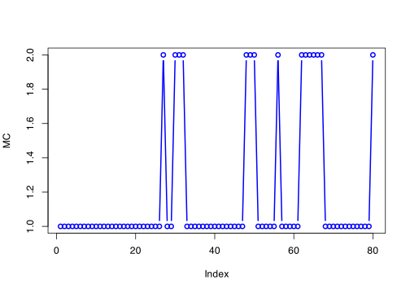
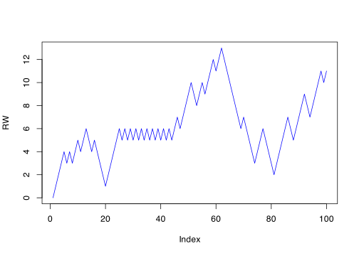
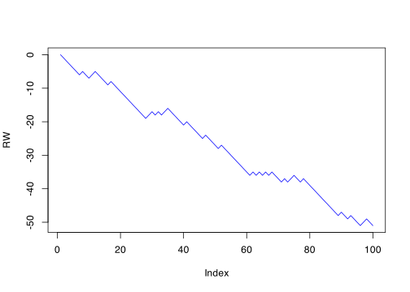
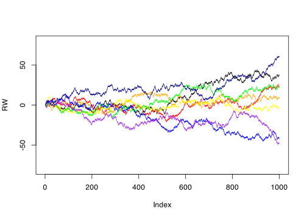

rmarkov <- function(n, trans, initial) {
states <- nrow(trans)
MC <- rep(0, n)
MC[1] <- initial
for (i in 1:(n - 1)) MC[i + 1] <- sample(states, 1, prob = trans[MC[i], ])
return(MC)
}17 Markov chains in discrete space
\[\newcommand{\Exg}{\operatorname{\mathbb{E}}} \newcommand{\Ex}{\mathbb{E}} \newcommand{\Ind}{\mathbb{I}} \newcommand{\Var}{\operatorname{Var}} \newcommand{\Cov}{\operatorname{Cov}} \newcommand{\Corr}{\operatorname{Corr}} \newcommand{\ee}{\mathrm{e}}\]
17.1 Markov chains and MCMC
In the first part of this module, we looked at Monte Carlo methods, where we estimated \(\theta = \Exg\phi(X)\) by \[ \widehat{\theta}_n = \frac{1}{n} \sum_{i=1}^n \phi(X_i) \] where \(X_1, X_2, \dots, X_n\) are IID samples from the same distributions as \(X\). This worked well for relatively simple distributions \(X\), like those that can be sampled using the inverse transform method or rejection sampling (or a built-in R function). These tended to be one-dimensional distributions, sometimes with a simple dependence on one parameter.
However, these methods are often not available when dealing with very complex distributions \(X\). For example, these might not be one-dimensional but rather living in some very high-dimensional space. Or they might depend on many parameters – and those parameters might themselves be drawn from random distributions (a so-called “hierarchical model”).
For more complicated distributions, we can make progress by loosening the assumption that \(X_1, X_2, \dots, X_n\) are IID copies of \(X\).
Rather than the \(X_i\) having exactly the same distribution as \(X\), we might be willing for them to have approximately the same distribution as \(X\), and reach the same distribution in the limit as \(i \to \infty\).
Rather than having the \(X_i\) be independent, we could let them have some dependence, but we will want to set things up so that we limit the dependence so there is only “light” dependence and so that we understand the dependence structure well.
The way will do this is to allow \(X_1, X_2, \dots\) to be a random process (or “stochastic” process) that has a particular dependence structure known as the Markov property. Such a process is known as a Markov chain. Random variables in Markov chains can be shown (under certain conditions) to tend to a certain distribution – we will want to set things up so that that “limiting distribution” is the distribution \(X\) we want to sample from.
Using a Monte Carlo estimator where the samples \(X_1, X_2, \dots\) are not IID but rather form a Markov chain is known as Markov chain Monte Carlo – although it’s almost always referred to by the abbreviation MCMC. MCMC is one of the most important ideas in statistics in the second-half of the 20th and in the 21st centuries, and is especially important in Bayesian statistics.
In this part of the of the module, we will study MCMC in depth. We will take a brief tour through the theory of Markov chains, then talk about how to use the output of a Markov chain for Monte Carlo estimation. We will look specifically at the Metropolis–Hastings algorithm, which is one way of setting up a Markov chain to have a specific distribution as its limiting distribution, and has some properties in common with rejection sampling ideas we have already seen.
The schedule will be:
Today and Lecture 18: Theory of Markov chains in discrete space
Lecture 19: Metropolis–Hastings algorithm in discrete space
Lecture 20: Theory of Markov chains in continuous space
Lecture 21: Metropolis–Hastings algorithm in continuous space
Lectures 22 and 23: MCMC in practice (including for Bayesian statistics).
Some of you may have studied Markov chains before – for example, in the Leeds second-year module MATH2750 Introduction to Markov Processes. If so, you should find that today and the next lecture are just a brief reminder of things you already know, but the rest of the material is likely to be new.
17.2 Introduction to Markov chains
A Markov chain in discrete time \(i = 1, 2, \dots\) and discrete space \(\mathcal S\) is a sequence of random variables \((X_1, X_2, X_3, \dots)\). The random variables are not independent, but their dependence is limited to just the random variable before it in the list. That is, the next state \(X_{i+1}\) can depend on on the current state \(X_i\); but, given the current state \(X_i\), it has no further dependence on the past states \(X_{i-1}, X_{i-2}, \dots, X_2, X_1\). This is known as the “Markov property”.
Think of playing a simple board game where you roll a dice and move that many squares along the board. Let \(X_i\) be the current square you are on. The the next square you land on, \(X_{i+1}\):
is random – because it depends on the roll of the dice;
depends on which square \(X_i\) you are on now – because the value of dice roll will be added to your current square;
given the square \(X_i\) you are on now, it doesn’t depend which sequence of squares \(X_1, X_2, \dots, X_{i-1}\) you previously landed on to get there.
Definition 17.1 A sequence of random variables \((X_i) = (X_1, X_2, \dots)\) taking values in a countable state space \(\mathcal S\) is said to be a Markov chain or to have the Markov property if \[ \mathbb P(X_{i+1} = x_{i+1} \mid X_i = x_i, X_{i-1} = x_{i=1}, \dots, X_1 = x_1) = \mathbb P(X_{i+1} = x_{i+1} \mid X_i = x_i)\] for all \(i = 1, 2, \dots\) and for all \(x_1, \dots, x_{i-1}, x_{i}, x_{i+1} \in \mathcal S\) such that the conditional probability is defined.
Example 17.1 Consider a simple model of an unreliable printer:
On day 1, the printer is working.
If the printer is working, then the next day there is a 90% chance it is still working, but a 10% chance it has broken.
If the printer is broken, then the next day there is a 50% chance it has been mended, but a 50% chance it is still broken.
We can model this as a Markov chain on the state space \(\mathcal S = \{1, 2\}\), where state 1 denotes that the printer is working and state 2 denotes that the printer is working. We have \[ \begin{align} \mathbb P(X_{i+1} = 1 \mid X_i = 1) &= 0.9 & \mathbb P(X_{i+1} = 2 \mid X_i = 1) &= 0.1 \\ \mathbb P(X_{i+1} = 1 \mid X_i = 2) &= 0.5 & \mathbb P(X_{i+1} = 2 \mid X_i = 2) &= 0.5. \end{align} \]
Example 17.2 Consider the simple random walk on \(\mathcal S = \mathbb Z\). We start at \(X_1 = 0\). At each time step, we move up 1 with probability \(p\) and down one with probability \(q = 1-p\); so \[ \mathbb P(X_{i+1} = y \mid X_i = x) = \begin{cases} p & \text{ if }y = x+1 \\ q & \text{ if }y = x-1 \\ 0 & \text{ otherwise}. \end{cases} \]
If \(p = q = \tfrac12\), this is called the simple symmetric random walk.
We can also write this as \[ X_{i+1} = X_i + Z_i , \tag{17.1}\] where the \(Z_i\) are IID with distribution \[ Z_i = \begin{cases} +1 & \text{ with probability } p \\ -1 & \text{ with probability } q. \end{cases} \] Any Markov chain with the structure Equation 17.1 for an IID sequence \((Z_i)\) is called a random walk. If the \(Z_i\) are symmetric, in that \(\mathbb P(Z_i = +z) = \mathbb P(Z_i = -z)\) for all \(z\), then it is a symmetric random walk.
In both the Markov chains we have looked at – and, indeed, all the Markov chains we will ever look at – the transition probability \(p(x, y) = \mathbb P(X_{i+1} = y \mid X_i = x)\) was the same for all \(i\). That is, the probability \(p(x, y)\) of moving from \(x\) to \(y\) does not depend on which timestep \(i\) we are at. This is called being time homogeneous.
Once we have the notation \(p(x, y)\) for the transition probability, it will in fact be useful to write them in a matrix \(\mathsf P = (p(x,y))\), called the transition matrix.
For the two-state “unreliable printer” Markov chain, the transition matrix is \[ \mathsf P = \begin{pmatrix} 0.9 & 0.1 \\ 0.5 & 0.5 \end{pmatrix} . \]
For the simple random walk, the transition matrix is the “infinite matrix” \[ \mathsf P = \begin{pmatrix} \smash\ddots & \smash\ddots & \phantom{\smash\ddots} & \phantom{\smash\ddots} & \phantom{\smash\ddots} & \phantom{\smash\ddots} \\ \smash\ddots & 0 & p & & \\ & q & 0 & p & \\ & & q & 0 & p \\ & & & q & 0 & \smash\ddots \\ & & & & \smash\ddots & \smash\ddots \end{pmatrix} \] This has 0s down the diagonal (representing the probability 0 of staying still), \(p\) one place to the right of the diagonal (representing the probability of moving up 1), and \(q\) one place to the left of the diagonal (representing the probability of moving down 1). Blank spaces in this matrix denotes 0s.
The \(x\)th row of a transition matrix represents the probabilities of moving from \(x\) to each of the other states. Thus each row must consist of non-negative numbers that add up to 1, as is the case in both of our examples.
17.3 Simulation of Markov chains
We can take \(n\) samples from a finite-state Markov chain in R with the following function. In the function rmarkov(), n is the number of samples (or steps) to take, trans is the transition matrix \(\mathsf P\), and initial is the initial state \(X_1\).
The key line is the for loop in the penultimate line. Here, the next state \(X_{i+1}\) is chosen by sampling a state with probabilities according to the \(x\)th row of the transition matrix, where \(X_i = x\) is the current state.
Example 17.3 Let’s simulate the two-state broken printer Markov chain from Example 17.1.
trans <- matrix(c(0.9, 0.1, 0.5, 0.5), 2, 2, byrow = TRUE)
initial <- 1
MC <- rmarkov(80, trans, initial)
plot(MC, col = "blue", lwd = 2, type = "b")
In the first line, we entered a \(2 \times 2\) matrix using the code matrix(P, 2, 2), where P was a vector of length \(2 \times 2 = 4\). R default is to fill up the matrix column at a time; I personally find it more logical (at least when working with Markov chains) to fill up a matrix row at a time, so I used byrow = TRUE to ensure that.
Our sample shows that printer spent most of the time working (state 1), but when it did break (state 2) it usually got mended pretty quickly.
Example 17.4 We can simulate the simple random walk from Example 17.4 with the following code.
rrw <- function(n, up) {
RW <- rep(0, n)
down <- 1 - up
RW[1] <- 0
for (i in 1:(n - 1)) {
RW[i + 1] <- RW[i] + sample(c(1, -1), 1, prob = c(up, down))
}
return(RW)
}So with \(p = 0.6\), we have
RW <- rrw(100, 0.6)
plot(RW, col = "blue", type = "l")
which goes up on average. With \(p = 0.3\), we have
RW <- rrw(100, 0.3)
plot(RW, col = "blue", type = "l")
which goes down on average. The simple symmetric random walk, with \(p = 0.5\) can be much more unpredictable.
RW <- rrw(1000, 0.5)
plot(RW, col = "black", type = "l", ylim = c(-80, 80))
cols <- c("red", "orange", "yellow", "green", "blue", "darkblue", "purple")
for (i in 1:7) {
RW <- rrw(1000, 0.5)
points(RW, col = cols[i], type = "l")
}
Next time. We continue our whistle-stop tour of discrete-space Markov chains.
Summary:
A Markov chain is a stochastic process where the next step \(X_{i+1}\) depends on the current step \(X_i\), but, given current step \(X_{i}\), does not depend on the past \(X_1, \dots, X_{i-1}\).
A Markov chain is governed by its transition probabilities \(p(x, y) = \mathbb P(X_{i+1} = y \mid X_i = x)\). These are written in the transition matrix \(\mathsf P\), whose rows add up to 1.
The simple random walk on the integers at each step goes up 1 with probability \(p\) and down 1 with probability \(q\). If \(p = q = \tfrac12\), it is a simple symmetric random walk.
Read more: Voss, An Introduction to Statistical Computing, Subsections 2.3.1; my notes for MATH2750 Introduction to Markov Processes.